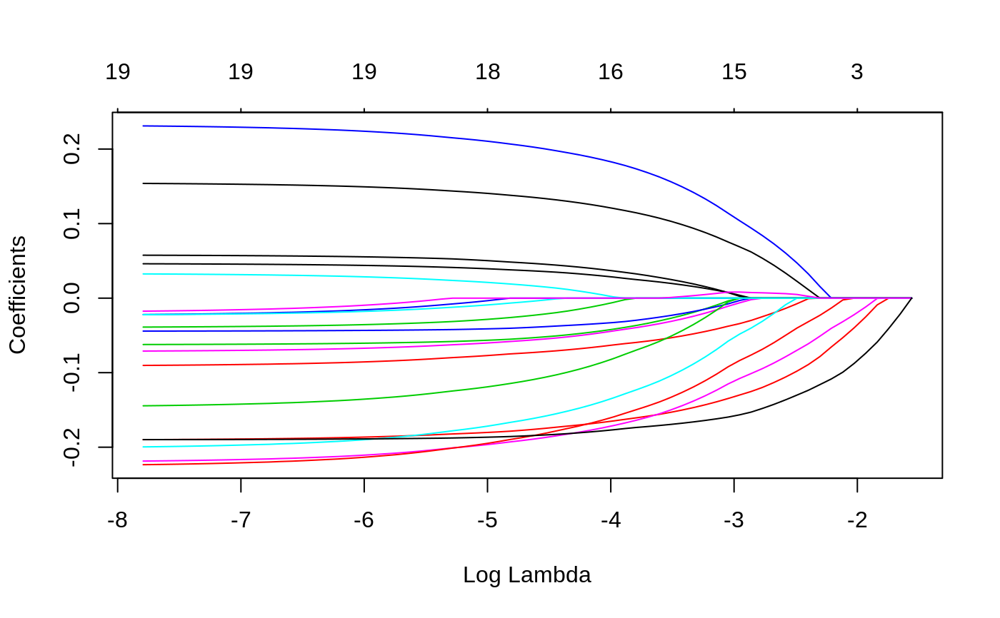

glmnet-package.RdThis package fits lasso and elastic-net model paths for regression, logistic and multinomial regression using coordinate descent. The algorithm is extremely fast, and exploits sparsity in the input x matrix where it exists. A variety of predictions can be made from the fitted models.
| Package: | glmnet |
| Type: | Package |
| Version: | 1.0 |
| Date: | 2008-05-14 |
| License: | What license is it under? |
Very simple to use. Accepts x,y data for regression models, and
produces the regularization path over a grid of values for the tuning
parameter lambda. Only 5 functions: glmnet
predict.glmnet
plot.glmnet
print.glmnet
coef.glmnet
Friedman, J., Hastie, T. and Tibshirani, R. (2008)
Regularization Paths for Generalized Linear Models via Coordinate
Descent, https://web.stanford.edu/~hastie/Papers/glmnet.pdf
Journal of Statistical Software, Vol. 33(1), 1-22 Feb 2010
https://www.jstatsoft.org/v33/i01/
Simon, N., Friedman, J., Hastie,
T., Tibshirani, R. (2011) Regularization Paths for Cox's Proportional
Hazards Model via Coordinate Descent, Journal of Statistical Software, Vol.
39(5) 1-13
https://www.jstatsoft.org/v39/i05/
Tibshirani,
Robert., Bien, J., Friedman, J.,Hastie, T.,Simon, N.,Taylor, J. and
Tibshirani, Ryan. (2012) Strong Rules for Discarding Predictors in
Lasso-type Problems, JRSSB, vol 74,
https://statweb.stanford.edu/~tibs/ftp/strong.pdf
Stanford
Statistics Technical Report
Glmnet Vignette
https://web.stanford.edu/~hastie/glmnet/glmnet_alpha.html
x = matrix(rnorm(100 * 20), 100, 20) y = rnorm(100) g2 = sample(1:2, 100, replace = TRUE) g4 = sample(1:4, 100, replace = TRUE) fit1 = glmnet(x, y) predict(fit1, newx = x[1:5, ], s = c(0.01, 0.005))#> 1 2 #> [1,] 0.8990504 0.9517110 #> [2,] 0.1207432 0.1060893 #> [3,] -0.1330780 -0.1569648 #> [4,] 0.1874867 0.1686008 #> [5,] 0.6083038 0.6416611#> 21 x 68 sparse Matrix of class "dgCMatrix"#>#> #> (Intercept) 0.1316156 0.1279638 0.1246363 0.1206031585 0.11466554 #> V1 . . . . . #> V2 . . . -0.0089984550 -0.02502290 #> V3 . . . . . #> V4 . . . . . #> V5 . . . . . #> V6 . . . . . #> V7 . . . -0.0003756067 -0.01171576 #> V8 . . . . . #> V9 . . . . . #> V10 . . . . . #> V11 . . . . . #> V12 . . . . . #> V13 . . . . . #> V14 . . . . . #> V15 . . . . . #> V16 . . . . . #> V17 . . . . . #> V18 . . . . . #> V19 . . . . . #> V20 . -0.0213063 -0.0407198 -0.0588843498 -0.07381744 #> #> (Intercept) 0.10925529 0.104633842 0.10151451 0.09906752 0.0979350382 #> V1 . . . . . #> V2 -0.03962329 -0.053002965 -0.06545831 -0.07838357 -0.0890201174 #> V3 . . . . . #> V4 . . . . . #> V5 . . . . . #> V6 . . . . . #> V7 -0.02204972 -0.031534360 -0.04043706 -0.05103997 -0.0611521831 #> V8 . . . . . #> V9 . . . . -0.0006521341 #> V10 . . . . . #> V11 . . . . . #> V12 . . . . . #> V13 . . . . . #> V14 . . . . 0.0112544965 #> V15 . -0.002420237 -0.01321007 -0.02303216 -0.0315593812 #> V16 . . . . . #> V17 . . . 0.01560193 0.0323546993 #> V18 . . . . . #> V19 . . . . 0.0024703988 #> V20 -0.08742365 -0.099317313 -0.10836374 -0.11599506 -0.1235406551 #> #> (Intercept) 0.096932918 0.094977334 0.09279798 0.090812535 0.089108757 #> V1 . . . . . #> V2 -0.097905546 -0.105886408 -0.11311567 -0.119704452 -0.125253075 #> V3 . . . . . #> V4 . . . . . #> V5 . . . . . #> V6 . . . . . #> V7 -0.069959219 -0.078698386 -0.08693820 -0.094449268 -0.101202850 #> V8 . . . . . #> V9 -0.007497434 -0.013782948 -0.01953398 -0.024773604 -0.029888266 #> V10 . . . . . #> V11 . . . . . #> V12 . -0.008908048 -0.02041643 -0.030899220 -0.040163622 #> V13 . . . . -0.002023973 #> V14 0.022580211 0.033618527 0.04395199 0.053367197 0.061993716 #> V15 -0.040130708 -0.049936972 -0.05963450 -0.068473489 -0.076320121 #> V16 . . . . . #> V17 0.047188173 0.060567804 0.07270930 0.083773866 0.094031818 #> V18 . . . . . #> V19 0.004909944 0.006018993 0.00660307 0.007134907 0.007493543 #> V20 -0.130066968 -0.136458110 -0.14244941 -0.147907023 -0.152896892 #> #> (Intercept) 0.088830733 0.088916549 0.088702302 0.088509793 0.088334372 #> V1 0.003850723 0.007558762 0.010465996 0.013138978 0.015574595 #> V2 -0.129953670 -0.134628677 -0.139042672 -0.143075149 -0.146749451 #> V3 . -0.003682415 -0.009267935 -0.014339642 -0.018960750 #> V4 -0.003144036 -0.007661254 -0.011362700 -0.014748370 -0.017833287 #> V5 . . . . . #> V6 . . . . . #> V7 -0.107780351 -0.115092780 -0.123387643 -0.130984857 -0.137907396 #> V8 0.002494012 0.007407174 0.011612641 0.015447458 0.018941591 #> V9 -0.034169352 -0.037650430 -0.041364678 -0.044759225 -0.047852299 #> V10 . . . . . #> V11 . . . . . #> V12 -0.048263784 -0.057655805 -0.068759396 -0.078898838 -0.088137731 #> V13 -0.006290682 -0.010813011 -0.015692872 -0.020141154 -0.024194283 #> V14 0.068789579 0.075307812 0.081957018 0.088007935 0.093521310 #> V15 -0.083676053 -0.092059230 -0.101830448 -0.110780164 -0.118935080 #> V16 . -0.004975382 -0.015982061 -0.026039618 -0.035203890 #> V17 0.103865400 0.113869858 0.123968086 0.133189014 0.141590888 #> V18 . . . . . #> V19 0.008141125 0.008088543 0.006387851 0.004819916 0.003391139 #> V20 -0.156550808 -0.159545770 -0.161913359 -0.164051416 -0.165999440 #> #> (Intercept) 0.08817454 0.0880288979 0.08791080 0.08788218 0.08785893 #> V1 0.01779384 0.0198159311 0.02166005 0.02332964 0.02486118 #> V2 -0.15009734 -0.1531478080 -0.15591734 -0.15834175 -0.16055097 #> V3 -0.02317133 -0.0270078558 -0.03050325 -0.03371524 -0.03663258 #> V4 -0.02064415 -0.0232053012 -0.02554389 -0.02768812 -0.02964916 #> V5 . . . . . #> V6 . . . . . #> V7 -0.14421496 -0.1499621734 -0.15517571 -0.15967404 -0.16379331 #> V8 0.02212531 0.0250262034 0.02768560 0.03020073 0.03249854 #> V9 -0.05067059 -0.0532385180 -0.05556553 -0.05757630 -0.05941410 #> V10 . . . . . #> V11 . . . . . #> V12 -0.09655587 -0.1042261599 -0.11119928 -0.11735406 -0.12297265 #> V13 -0.02788734 -0.0312523222 -0.03430883 -0.03702371 -0.03949839 #> V14 0.09854489 0.1031221914 0.10728659 0.11102710 0.11443259 #> V15 -0.12636554 -0.1331358952 -0.13928647 -0.14467326 -0.14960651 #> V16 -0.04355403 -0.0511623751 -0.05807070 -0.06412399 -0.06965428 #> V17 0.14924636 0.1562217489 0.16256334 0.16819199 0.17333084 #> V18 . . . . . #> V19 0.00208929 0.0009030934 . . . #> V20 -0.16777441 -0.1693916890 -0.17086299 -0.17223889 -0.17348212 #> #> (Intercept) 0.08793850 0.087639699 0.087011779 0.086444588 0.085927797 #> V1 0.02651418 0.028270286 0.029837775 0.031280700 0.032595648 #> V2 -0.16264497 -0.164744352 -0.166720691 -0.168527932 -0.170174616 #> V3 -0.03925929 -0.041658527 -0.043840960 -0.045810239 -0.047604475 #> V4 -0.03139266 -0.032742984 -0.033842736 -0.034862374 -0.035791484 #> V5 . . . . . #> V6 . 0.001662191 0.004520373 0.007125755 0.009499778 #> V7 -0.16749648 -0.170962595 -0.174185630 -0.177167702 -0.179885081 #> V8 0.03454963 0.036503003 0.038358207 0.040068650 0.041627185 #> V9 -0.06102300 -0.062784295 -0.064658488 -0.066374624 -0.067938416 #> V10 -0.00204924 -0.005751921 -0.009046798 -0.012057117 -0.014800010 #> V11 . . . . . #> V12 -0.12835012 -0.133813913 -0.138864300 -0.143491628 -0.147708029 #> V13 -0.04173349 -0.044000302 -0.046280809 -0.048360088 -0.050254647 #> V14 0.11748265 0.120353853 0.123102979 0.125604358 0.127883447 #> V15 -0.15450662 -0.159397756 -0.163773574 -0.167812905 -0.171493730 #> V16 -0.07532202 -0.081079381 -0.086278284 -0.091050153 -0.095398253 #> V17 0.17796938 0.182077990 0.185770782 0.189161705 0.192251449 #> V18 . . . . . #> V19 . . . . . #> V20 -0.17496892 -0.176619432 -0.178111536 -0.179452849 -0.180674856 #> #> (Intercept) 0.08545692 0.0850456762 0.084706580 0.084393305 0.084107853 #> V1 0.03379378 0.0348324493 0.035723799 0.036543794 0.037290984 #> V2 -0.17167501 -0.1731870534 -0.174710443 -0.176093009 -0.177352763 #> V3 -0.04923932 -0.0506929191 -0.051955245 -0.053109689 -0.054161532 #> V4 -0.03663805 -0.0374662235 -0.038312550 -0.039076020 -0.039771682 #> V5 . . . . . #> V6 0.01166290 0.0135191290 0.015064650 0.016487416 0.017783828 #> V7 -0.18236106 -0.1847707488 -0.187071077 -0.189180461 -0.191102638 #> V8 0.04304727 0.0443242652 0.045493454 0.046556396 0.047524953 #> V9 -0.06936328 -0.0706802680 -0.071849553 -0.072928413 -0.073911515 #> V10 -0.01729923 -0.0194797333 -0.021346497 -0.023056911 -0.024615400 #> V11 . . . . . #> V12 -0.15154986 -0.1551459287 -0.158432294 -0.161447566 -0.164195147 #> V13 -0.05198090 -0.0535075412 -0.054835452 -0.056051452 -0.057159425 #> V14 0.12996007 0.1318728378 0.133618011 0.135210603 0.136661729 #> V15 -0.17484756 -0.1782088948 -0.181464243 -0.184454206 -0.187178801 #> V16 -0.09936008 -0.1029868216 -0.106263588 -0.109264191 -0.111998369 #> V17 0.19506671 0.1977568403 0.200329196 0.202672342 0.204807413 #> V18 . -0.0009618754 -0.002577328 -0.004049885 -0.005391679 #> V19 . . . . . #> V20 -0.18178830 -0.1827516925 -0.183590192 -0.184348751 -0.185039848 #> #> (Intercept) 0.083847760 0.083414159 0.082990396 0.082609809 0.082263063 #> V1 0.037971797 0.038713573 0.039406689 0.040038882 0.040614834 #> V2 -0.178500604 -0.179407572 -0.180191213 -0.180919253 -0.181582637 #> V3 -0.055119931 -0.055869334 -0.056516150 -0.057109787 -0.057650808 #> V4 -0.040405544 -0.040839174 -0.041203223 -0.041546410 -0.041859094 #> V5 . . . . . #> V6 0.018965070 0.020074627 0.021123679 0.022067239 0.022926905 #> V7 -0.192854055 -0.194727081 -0.196486783 -0.198090401 -0.199551272 #> V8 0.048407466 0.049392405 0.050319967 0.051163005 0.051931050 #> V9 -0.074807281 -0.075934123 -0.077040055 -0.078030798 -0.078933356 #> V10 -0.026035437 -0.027300148 -0.028466720 -0.029521784 -0.030483104 #> V11 . -0.001714213 -0.003448373 -0.005016163 -0.006444438 #> V12 -0.166698641 -0.169317508 -0.171789208 -0.174025819 -0.176063476 #> V13 -0.058168969 -0.059199330 -0.060156001 -0.061023778 -0.061814443 #> V14 0.137983942 0.139326194 0.140567560 0.141695921 0.142724011 #> V15 -0.189661351 -0.192320289 -0.194839985 -0.197125059 -0.199206742 #> V16 -0.114489651 -0.116851504 -0.119044293 -0.121036174 -0.122850909 #> V17 0.206752811 0.208712803 0.210524804 0.212178540 0.213685212 #> V18 -0.006614272 -0.007924503 -0.009140178 -0.010249655 -0.011260469 #> V19 . . . . . #> V20 -0.185669549 -0.186146069 -0.186558803 -0.186934604 -0.187277139 #> #> (Intercept) 0.081947121 0.081500343 0.081029258 0.080597937 0.080204836 #> V1 0.041139617 0.041608605 0.042046761 0.042448533 0.042814743 #> V2 -0.182187086 -0.182868020 -0.183549821 -0.184173406 -0.184741708 #> V3 -0.058143769 -0.058567333 -0.058926097 -0.059249438 -0.059543868 #> V4 -0.042143998 -0.042356284 -0.042535452 -0.042699275 -0.042848582 #> V5 . . . . . #> V6 0.023710200 0.024512769 0.025292011 0.026004711 0.026654226 #> V7 -0.200882358 -0.202414416 -0.203987906 -0.205433294 -0.206750854 #> V8 0.052630861 0.053145252 0.053578324 0.053974005 0.054334591 #> V9 -0.079755730 -0.080678883 -0.081612790 -0.082469582 -0.083250544 #> V10 -0.031359024 -0.032101883 -0.032761966 -0.033362926 -0.033910467 #> V11 -0.007745824 -0.009044053 -0.010308561 -0.011468051 -0.012524894 #> V12 -0.177920109 -0.179866699 -0.181788631 -0.183549530 -0.185154460 #> V13 -0.062534869 -0.063305175 -0.064055430 -0.064740575 -0.065364927 #> V14 0.143660768 0.144607077 0.145513470 0.146341083 0.147095251 #> V15 -0.201103485 -0.203095069 -0.205077162 -0.206896551 -0.208554972 #> V16 -0.124504425 -0.126288399 -0.128058004 -0.129678567 -0.131155562 #> V17 0.215058032 0.216500590 0.217918385 0.219216753 0.220400103 #> V18 -0.012181483 -0.013103149 -0.013993744 -0.014809097 -0.015552208 #> V19 . -0.001281906 -0.002859927 -0.004304578 -0.005621223 #> V20 -0.187589248 -0.187840604 -0.188033087 -0.188204361 -0.188360211 #> #> (Intercept) 0.079846652 0.079536397 0.079239005 0.078966753 0.07871857 #> V1 0.043148426 0.043438600 0.043715144 0.043968670 0.04419983 #> V2 -0.185259530 -0.185717278 -0.186146972 -0.186539814 -0.18689788 #> V3 -0.059812132 -0.060078257 -0.060301492 -0.060502690 -0.06068580 #> V4 -0.042984627 -0.043108797 -0.043221401 -0.043324288 -0.04341807 #> V5 . . . . . #> V6 0.027246047 0.027765358 0.028256614 0.028705909 0.02911545 #> V7 -0.207951395 -0.208965995 -0.209961915 -0.210876450 -0.21171041 #> V8 0.054663147 0.054955970 0.055228602 0.055477665 0.05570467 #> V9 -0.083962142 -0.084568269 -0.085158775 -0.085700471 -0.08619439 #> V10 -0.034409364 -0.034863008 -0.035277564 -0.035655045 -0.03599896 #> V11 -0.013487867 -0.014314541 -0.015113587 -0.015846120 -0.01651400 #> V12 -0.186616835 -0.187878476 -0.189092304 -0.190204239 -0.19121795 #> V13 -0.065933818 -0.066439513 -0.066911862 -0.067343228 -0.06773636 #> V14 0.147782424 0.148393985 0.148964641 0.149485640 0.14996045 #> V15 -0.210066095 -0.211351620 -0.212605231 -0.213755679 -0.21480471 #> V16 -0.132501363 -0.133668752 -0.134785762 -0.135808547 -0.13674094 #> V17 0.221478344 0.222416955 0.223311663 0.224130833 0.22487761 #> V18 -0.016229313 -0.016820600 -0.017382442 -0.017896707 -0.01836551 #> V19 -0.006820917 -0.007866234 -0.008861904 -0.009773273 -0.01060407 #> V20 -0.188502206 -0.188657473 -0.188775835 -0.188881174 -0.18897691 #> #> (Intercept) 0.07849242 0.07830809 0.07812203 0.07794951 0.07779180 #> V1 0.04441046 0.04458936 0.04476164 0.04492162 0.04506800 #> V2 -0.18722416 -0.18750773 -0.18777692 -0.18802456 -0.18825064 #> V3 -0.06085262 -0.06102572 -0.06116746 -0.06129250 -0.06140561 #> V4 -0.04350352 -0.04358771 -0.04365823 -0.04372231 -0.04378072 #> V5 . . . . . #> V6 0.02948862 0.02980334 0.03011073 0.03039464 0.03065402 #> V7 -0.21247036 -0.21307131 -0.21369250 -0.21427306 -0.21480475 #> V8 0.05591151 0.05609205 0.05626300 0.05641996 0.05656320 #> V9 -0.08664446 -0.08700112 -0.08736966 -0.08771352 -0.08802832 #> V10 -0.03631232 -0.03658802 -0.03684878 -0.03708667 -0.03730341 #> V11 -0.01712259 -0.01761429 -0.01811342 -0.01857779 -0.01900265 #> V12 -0.19214166 -0.19289010 -0.19364897 -0.19435381 -0.19499842 #> V13 -0.06809458 -0.06840435 -0.06870049 -0.06897258 -0.06922089 #> V14 0.15039308 0.15076666 0.15112474 0.15145346 0.15175337 #> V15 -0.21576061 -0.21652288 -0.21730496 -0.21803484 -0.21870308 #> V16 -0.13759055 -0.13829138 -0.13899003 -0.13963745 -0.14022931 #> V17 0.22555808 0.22612874 0.22668842 0.22720622 0.22767950 #> V18 -0.01879269 -0.01915276 -0.01950422 -0.01982916 -0.02012612 #> V19 -0.01136110 -0.01199322 -0.01261610 -0.01319242 -0.01371916 #> V20 -0.18906412 -0.18917028 -0.18924638 -0.18931081 -0.18936857 #> #> (Intercept) 0.07768047 0.07752221 0.07742630 0.07732282 0.07722326 #> V1 0.04518615 0.04531875 0.04541961 0.04551720 0.04560887 #> V2 -0.18844557 -0.18864103 -0.18880536 -0.18895949 -0.18910156 #> V3 -0.06151669 -0.06160785 -0.06169662 -0.06177800 -0.06184972 #> V4 -0.04385128 -0.04388378 -0.04394148 -0.04398531 -0.04402174 #> V5 . . . . . #> V6 0.03084872 0.03109953 0.03126518 0.03143774 0.03160129 #> V7 -0.21518052 -0.21570858 -0.21603597 -0.21638440 -0.21671962 #> V8 0.05668399 0.05681114 0.05691248 0.05701113 0.05710164 #> V9 -0.08824667 -0.08856370 -0.08875367 -0.08895823 -0.08915653 #> V10 -0.03746572 -0.03767948 -0.03781515 -0.03796214 -0.03810004 #> V11 -0.01930770 -0.01972755 -0.01999117 -0.02027092 -0.02053895 #> V12 -0.19545451 -0.19609918 -0.19649304 -0.19691632 -0.19732340 #> V13 -0.06941815 -0.06964962 -0.06981583 -0.06998363 -0.07014039 #> V14 0.15199185 0.15227133 0.15247241 0.15267519 0.15286464 #> V15 -0.21918148 -0.21984036 -0.22025589 -0.22069331 -0.22111428 #> V16 -0.14067272 -0.14124293 -0.14162294 -0.14201573 -0.14238905 #> V17 0.22805824 0.22849210 0.22881463 0.22913238 0.22943027 #> V18 -0.02036518 -0.02063623 -0.02083966 -0.02103886 -0.02122566 #> V19 -0.01412609 -0.01462275 -0.01497010 -0.01532124 -0.01565306 #> V20 -0.18944523 -0.18947617 -0.18953497 -0.18958027 -0.18961683 #> #> (Intercept) 0.07713080 0.07704598 0.07696851 0.07689786 0.07683347 #> V1 0.04569362 0.04577131 0.04584226 0.04590696 0.04596593 #> V2 -0.18923170 -0.18935051 -0.18945886 -0.18955761 -0.18964759 #> V3 -0.06191389 -0.06197189 -0.06202456 -0.06207248 -0.06211612 #> V4 -0.04405394 -0.04408302 -0.04410943 -0.04413347 -0.04415537 #> V5 . . . . . #> V6 0.03175248 0.03189100 0.03201747 0.03213279 0.03223790 #> V7 -0.21703130 -0.21731744 -0.21757889 -0.21781737 -0.21803475 #> V8 0.05718427 0.05725962 0.05732831 0.05739090 0.05744794 #> V9 -0.08934133 -0.08951113 -0.08966631 -0.08980787 -0.08993691 #> V10 -0.03822649 -0.03834190 -0.03844710 -0.03854297 -0.03863033 #> V11 -0.02078766 -0.02101581 -0.02122421 -0.02141428 -0.02158751 #> V12 -0.19770130 -0.19804792 -0.19836450 -0.19865321 -0.19891635 #> V13 -0.07028443 -0.07041608 -0.07053617 -0.07064563 -0.07074539 #> V14 0.15303863 0.15319760 0.15334259 0.15347475 0.15359518 #> V15 -0.22150564 -0.22186490 -0.22219314 -0.22249253 -0.22276543 #> V16 -0.14273431 -0.14305062 -0.14333941 -0.14360273 -0.14384273 #> V17 0.22970468 0.22995577 0.23018492 0.23039384 0.23058424 #> V18 -0.02139776 -0.02155523 -0.02169892 -0.02182993 -0.02194933 #> V19 -0.01595947 -0.01624003 -0.01649615 -0.01672966 -0.01694249 #> V20 -0.18964825 -0.18967619 -0.18970141 -0.18972430 -0.18974513 #> #> (Intercept) 0.07677480 0.07672133 0.07667261 #> V1 0.04601967 0.04606863 0.04611325 #> V2 -0.18972959 -0.18980430 -0.18987238 #> V3 -0.06215588 -0.06219210 -0.06222510 #> V4 -0.04417533 -0.04419351 -0.04421008 #> V5 . . . #> V6 0.03233368 0.03242095 0.03250047 #> V7 -0.21823285 -0.21841336 -0.21857783 #> V8 0.05749991 0.05754727 0.05759042 #> V9 -0.09005450 -0.09016165 -0.09025928 #> V10 -0.03870992 -0.03878245 -0.03884853 #> V11 -0.02174538 -0.02188923 -0.02202030 #> V12 -0.19915615 -0.19937465 -0.19957374 #> V13 -0.07083629 -0.07091912 -0.07099459 #> V14 0.15370491 0.15380490 0.15389601 #> V15 -0.22301412 -0.22324073 -0.22344721 #> V16 -0.14406143 -0.14426070 -0.14444228 #> V17 0.23075774 0.23091584 0.23105989 #> V18 -0.02205813 -0.02215726 -0.02224759 #> V19 -0.01713642 -0.01731314 -0.01747415 #> V20 -0.18976409 -0.18978137 -0.18979712#> s0 s1 s2 s3 s4 s5 s6 s7 #> [1,] 0.5 0.4957157 0.4908455 0.4863793 0.4815442 0.4767801 0.4666765 0.4574560 #> [2,] 0.5 0.5025976 0.5058101 0.5087605 0.5163690 0.5248731 0.5324840 0.5394615 #> [3,] 0.5 0.4987810 0.4966490 0.4946910 0.4936164 0.4927998 0.4891055 0.4858994 #> [4,] 0.5 0.4984396 0.5012374 0.5038222 0.5081674 0.5127468 0.5145375 0.5160468 #> s8 s9 s10 s11 s12 s13 s14 #> [1,] 0.4500921 0.4442138 0.4370733 0.4304967 0.4244371 0.4190290 0.4154664 #> [2,] 0.5454355 0.5500309 0.5517282 0.5533449 0.5548842 0.5564669 0.5589569 #> [3,] 0.4873589 0.4926685 0.5054378 0.5171682 0.5279357 0.5379818 0.5485419 #> [4,] 0.5136739 0.5118174 0.5078679 0.5042446 0.5009194 0.4973195 0.4895555 #> s15 s16 s17 s18 s19 s20 s21 #> [1,] 0.4121643 0.4091068 0.4062638 0.4026114 0.3992400 0.3934562 0.3859047 #> [2,] 0.5613070 0.5635178 0.5655842 0.5666097 0.5675869 0.5688657 0.5653795 #> [3,] 0.5582203 0.5670853 0.5752672 0.5876416 0.5989202 0.6110131 0.6196884 #> [4,] 0.4824223 0.4758711 0.4698606 0.4645972 0.4597727 0.4544830 0.4486175 #> s22 s23 s24 s25 s26 s27 s28 #> [1,] 0.3784227 0.3715556 0.3652568 0.3589393 0.3526053 0.3467934 0.3414857 #> [2,] 0.5612872 0.5575643 0.5541776 0.5519367 0.5507556 0.5492340 0.5478493 #> [3,] 0.6265977 0.6329107 0.6386762 0.6439121 0.6486577 0.6526689 0.6563274 #> [4,] 0.4429672 0.4377808 0.4330225 0.4282271 0.4233807 0.4181931 0.4134501 #> s29 s30 s31 s32 s33 s34 s35 #> [1,] 0.3366392 0.3322146 0.3284584 0.3255266 0.3228508 0.3203979 0.3182436 #> [2,] 0.5465888 0.5454412 0.5437434 0.5399442 0.5365221 0.5333799 0.5306994 #> [3,] 0.6596646 0.6627088 0.6651596 0.6645474 0.6641173 0.6637096 0.6631769 #> [4,] 0.4091154 0.4051546 0.4012907 0.3975394 0.3940882 0.3909464 0.3883306 #> s36 s37 s38 s39 s40 s41 s42 #> [1,] 0.3162980 0.3145767 0.3130047 0.3115693 0.3102686 0.3090721 0.3079796 #> [2,] 0.5282865 0.5259661 0.5238441 0.5219049 0.5201509 0.5185318 0.5170526 #> [3,] 0.6626686 0.6625323 0.6624049 0.6622870 0.6621922 0.6620911 0.6619974 #> [4,] 0.3860114 0.3841210 0.3823934 0.3808149 0.3793661 0.3780496 0.3768476 #> s43 s44 s45 s46 s47 s48 s49 #> [1,] 0.3069827 0.3060730 0.3052550 0.3044977 0.3038062 0.3031754 0.3026000 #> [2,] 0.5157018 0.5144686 0.5133644 0.5123367 0.5113976 0.5105406 0.5097587 #> [3,] 0.6619111 0.6618317 0.6617761 0.6617088 0.6616459 0.6615881 0.6615352 #> [4,] 0.3757502 0.3747485 0.3738270 0.3729927 0.3722320 0.3715380 0.3709049 #> s50 s51 s52 s53 s54 s55 #> [1,] 0.3020893 0.3016113 0.3011740 0.3008085 0.3004892 0.3003234 #> [2,] 0.5090687 0.5084188 0.5078237 0.5071890 0.5065353 0.5062173 #> [3,] 0.6615083 0.6614644 0.6614221 0.6613236 0.6611511 0.6612511 #> [4,] 0.3703220 0.3697946 0.3693146 0.3690231 0.3688828 0.3687720#> $s0 #> NULL #> #> $s1 #> [1] 9 10 15 #> #> $s2 #> [1] 9 10 15 #> #> $s3 #> [1] 9 10 15 #> #> $s4 #> [1] 6 9 10 15 #> #> $s5 #> [1] 5 6 9 10 15 #> #> $s6 #> [1] 5 6 9 10 15 #> #> $s7 #> [1] 2 5 6 9 10 15 #> #> $s8 #> [1] 2 5 6 9 10 15 #> #> $s9 #> [1] 1 2 5 6 9 10 15 18 #> #> $s10 #> [1] 1 2 5 6 9 10 15 18 #> #> $s11 #> [1] 1 2 5 6 9 10 15 18 #> #> $s12 #> [1] 1 2 5 6 9 10 15 18 #> #> $s13 #> [1] 1 2 5 6 9 10 15 18 19 #> #> $s14 #> [1] 1 2 5 6 9 10 15 18 19 #> #> $s15 #> [1] 1 2 5 6 9 10 15 18 19 #> #> $s16 #> [1] 1 2 5 6 9 10 15 18 19 #> #> $s17 #> [1] 1 2 5 6 9 10 13 15 18 19 #> #> $s18 #> [1] 1 2 5 6 9 10 13 15 18 19 #> #> $s19 #> [1] 1 2 5 6 9 10 13 15 18 19 #> #> $s20 #> [1] 1 2 4 5 6 9 10 13 15 18 19 #> #> $s21 #> [1] 1 2 4 5 6 7 9 10 12 13 15 18 19 #> #> $s22 #> [1] 1 2 4 5 6 7 9 10 12 13 15 18 19 #> #> $s23 #> [1] 1 2 4 5 6 7 9 10 12 13 15 18 19 #> #> $s24 #> [1] 1 2 4 5 6 7 9 10 12 13 15 18 19 #> #> $s25 #> [1] 1 2 4 5 6 7 9 10 11 12 13 15 18 19 #> #> $s26 #> [1] 1 2 3 4 5 6 7 9 10 11 12 13 15 18 19 #> #> $s27 #> [1] 1 2 3 4 5 6 7 9 10 11 12 13 15 18 19 #> #> $s28 #> [1] 1 2 3 4 5 6 7 9 10 11 12 13 15 18 19 #> #> $s29 #> [1] 1 2 3 4 5 6 7 9 10 11 12 13 15 18 19 #> #> $s30 #> [1] 1 2 3 4 5 6 7 9 10 11 12 13 15 18 19 #> #> $s31 #> [1] 1 2 3 4 5 6 7 9 10 11 12 13 15 16 18 19 20 #> #> $s32 #> [1] 1 2 3 4 5 6 7 9 10 11 12 13 15 16 18 19 20 #> #> $s33 #> [1] 1 2 3 4 5 6 7 9 10 11 12 13 15 16 18 19 20 #> #> $s34 #> [1] 1 2 3 4 5 6 7 9 10 11 12 13 15 16 18 19 20 #> #> $s35 #> [1] 1 2 3 4 5 6 7 8 9 10 11 12 13 15 16 18 19 20 #> #> $s36 #> [1] 1 2 3 4 5 6 7 8 9 10 11 12 13 14 15 16 18 19 20 #> #> $s37 #> [1] 1 2 3 4 5 6 7 8 9 10 11 12 13 14 15 16 18 19 20 #> #> $s38 #> [1] 1 2 3 4 5 6 7 8 9 10 11 12 13 14 15 16 18 19 20 #> #> $s39 #> [1] 1 2 3 4 5 6 7 8 9 10 11 12 13 14 15 16 18 19 20 #> #> $s40 #> [1] 1 2 3 4 5 6 7 8 9 10 11 12 13 14 15 16 18 19 20 #> #> $s41 #> [1] 1 2 3 4 5 6 7 8 9 10 11 12 13 14 15 16 18 19 20 #> #> $s42 #> [1] 1 2 3 4 5 6 7 8 9 10 11 12 13 14 15 16 18 19 20 #> #> $s43 #> [1] 1 2 3 4 5 6 7 8 9 10 11 12 13 14 15 16 18 19 20 #> #> $s44 #> [1] 1 2 3 4 5 6 7 8 9 10 11 12 13 14 15 16 18 19 20 #> #> $s45 #> [1] 1 2 3 4 5 6 7 8 9 10 11 12 13 14 15 16 18 19 20 #> #> $s46 #> [1] 1 2 3 4 5 6 7 8 9 10 11 12 13 14 15 16 18 19 20 #> #> $s47 #> [1] 1 2 3 4 5 6 7 8 9 10 11 12 13 14 15 16 18 19 20 #> #> $s48 #> [1] 1 2 3 4 5 6 7 8 9 10 11 12 13 14 15 16 18 19 20 #> #> $s49 #> [1] 1 2 3 4 5 6 7 8 9 10 11 12 13 14 15 16 18 19 20 #> #> $s50 #> [1] 1 2 3 4 5 6 7 8 9 10 11 12 13 14 15 16 18 19 20 #> #> $s51 #> [1] 1 2 3 4 5 6 7 8 9 10 11 12 13 14 15 16 18 19 20 #> #> $s52 #> [1] 1 2 3 4 5 6 7 8 9 10 11 12 13 14 15 16 18 19 20 #> #> $s53 #> [1] 1 2 3 4 5 6 7 8 9 10 11 12 13 14 15 16 17 18 19 20 #> #> $s54 #> [1] 1 2 3 4 5 6 7 8 9 10 11 12 13 14 15 16 17 18 19 20 #> #> $s55 #> [1] 1 2 3 4 5 6 7 8 9 10 11 12 13 14 15 16 17 18 19 20 #>fit3 = glmnet(x, g4, family = "multinomial") predict(fit3, newx = x[1:3, ], type = "response", s = 0.01)#> , , 1 #> #> 1 2 3 4 #> [1,] 0.3528253 0.3347243 0.27440451 0.03804590 #> [2,] 0.0979950 0.7873472 0.07355998 0.04109778 #> [3,] 0.4251785 0.4073988 0.04693317 0.12048947 #>